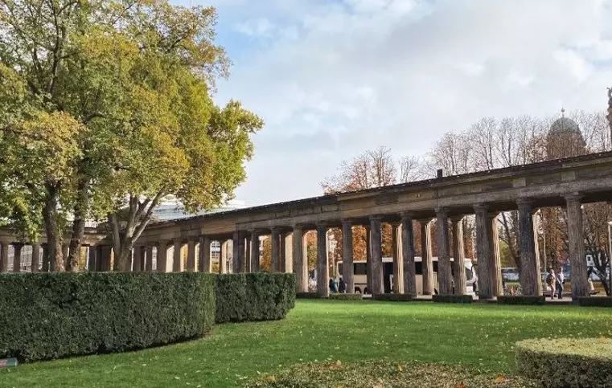
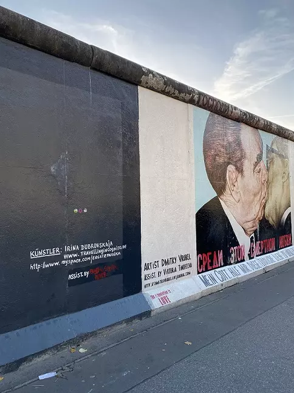

BERLÍN
Descubrí la fascinante ciudad de Berlín
Berlín, la capital de Alemania, es una ciudad fascinante que combina historia, cultura y vitalidad. Con una población diversa y vibrante se le conoce por su ambiente cosmopolita y su espíritu creativo. La ciudad ha superado su turbulento pasado y se ha convertido en un símbolo de la reunificación y la libertad. Sus calles están llenas de monumentos históricos que cuentan la historia de la ciudad.
Cuando hagas tu visita, tendrás una amplia gama de actividades para disfrutar. Podes explorar los icónicos lugares históricos, como el Muro de Berlín y el Reichstag, para sumergirte en la historia de la ciudad y comprender su importancia en la Segunda Guerra Mundial y la Guerra Fría. Además, también podes disfrutar de los numerosos parques y jardines de la ciudad, como el extenso Tiergarten, donde puedes relajarte y disfrutar de la naturaleza en medio del bullicio urbano.
La ciudad cuenta con una gran cantidad de lugares fascinantes para visitar. Uno de los puntos destacados es la Isla de los Museos, donde se encuentran varios museos de renombre, como el Museo de Pérgamo y el Antiguo Museo Nacional. Además, podes explorar la famosa East Side Gallery, que es una sección del Muro de Berlín que se ha convertido en una galería al aire libre, donde artistas de todo el mundo han dejado su huella con murales coloridos y significativos.

La gastronomía es variada y emocionante. No dejes de probar platos tradicionales alemanes, como la currywurst, una salchicha con salsa de curry, y los pretzels, famosos por su forma retorcida y su sabor delicioso. Además, vas a encontrar una gran cantidad de restaurantes internacionales, cafés acogedores y mercados callejeros donde podrás deleitarte con una amplia oferta culinaria que abarca desde comida vietnamita hasta platos veganos y vegetarianos.
Moverse por Berlín es fácil gracias a su eficiente sistema de transporte público. La ciudad cuenta con una extensa red de metro, tranvía y autobús que te permitirá desplazarte de manera rápida y cómoda. También es posible alquilar una bicicleta y recorrer la ciudad sobre dos ruedas, ya que es una ciudad muy amigable para los ciclistas, con numerosos carriles bici y amplias áreas verdes para disfrutar de un agradable paseo. Explorar la ciudad en bicicleta te brindará la oportunidad de descubrir rincones encantadores y moverte de manera ágil y sostenible. Si haces click aquí vas a poder ingresar a la web del serivio de transporte de Berlín y obtener mas información como los precios de los tickets y las excursiones disponibles.
Azul